Objectives
We implement some simple unit tests. We first test manually and progress to semi-automated tests. Then we introduce test automation by showing how batches of unit tests can be run automatically. The BlueJ Debugger is used to locate any errors discovered during testing. A helpful feature of the BlueJ framework is exercised to record and replay a suite of tests.
Using BlueJ Debugger(1)
To investigate the error triggered by invoking checkEndDayBoundary we shall now make use of our knowledge of:
- The BlueJ debugger.
- Arrays
To reproduce the error:
- Instantiate DiaryTester object
- Invoke checkEndDayBoundary method.
Here is the error message output to the BlueJ Terminal Window (diary-prototype):
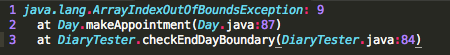
Line numbers are inserted for ease of identification.
Notice the number 9 in row 1.
Since, from line 2 above, we see that the error is first triggered in the Day method makeAppointment then a first guess is that this number corresponds to the maximum number of appointments per day.
This is specified in the Day class thus:
// The first and final bookable hours in a day.
public static final int START_OF_DAY = 9;
public static final int FINAL_APPOINTMENT_TIME = 17;
// The number of bookable hours in a day.
public static final int MAX_APPOINTMENTS_PER_DAY = FINAL_APPOINTMENT_TIME - START_OF_DAY + 1; //which amounts to 9Open the Day class and study the makeAppointment method:
public boolean makeAppointment(int time, Appointment appointment)
{
if(validTime(time)) {
int startTime = time - START_OF_DAY;
if(appointments[startTime] == null) {
int duration = appointment.getDuration();
// Fill in all the slots for the full duration of the appointment.
for(int i = 0; i < duration; i++) {
appointments[startTime + i] = appointment;
}
return true;
}
else {
return false;
}
}
else {
return false;
}
}In order to narrow down the possible causes of the error, we note the following:
From the error message it's clear the error occurs in this method, makeAppointment.
2 Day.makeAppointment(Day.java:87)From the Day constructor that the array appointments has a maximum size of MAX_APPOINTMENTS_PER_DAY which is 9.
appointments = new Appointments[MAX_APPOINTMENTS_PER_DAY];- The only array referenced in makeAppointment is appointments. The type of this array is Appointment.
- The array appointments is accessed in two locations within makeAppointments.
if(appointments[startTime] == null)... appointments[startTime + i] = ....
To investigate further:
- Place a breakpoint at the first line in makeAppointments (Figure 1).
- Create a DiaryTester object on the object bench.
- Invoke checkEndDayBoundary on the DiaryTester object.
- The program will halt at the breakpoint and open a Debugger window (Figure 2)..
- Press Continue. This triggers the error.
- Invoke checkEndDayBoundary again.
- When the program stops at the breakpoint step through the code using the Step button.
- An attempt is made to access appointments[9] when in fact the maximum permissible index is 8.
- This is so because arrays are zero-index based and so the valid range here is [0, 8].
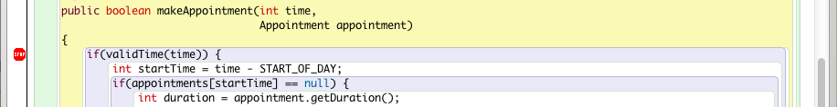
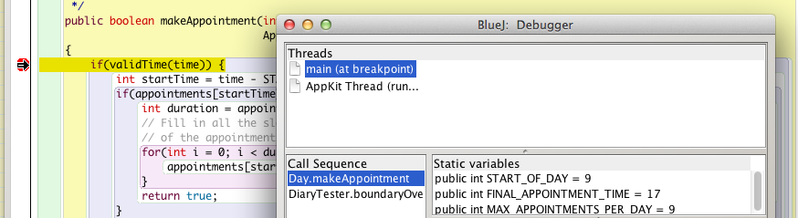
We have investigated the source of this error in considerable detail.
In this particular case, however, we could have located the offending line of code using a quicker method as follows:
- Notice the number 87 towards the end of line 2 of line 2 of the error messsge:
2 Day.makeAppointent(Day.java.93)- The number 87 is the line number in Day source code at which the error was triggered.
- Line numbers are disabled by default in the BlueJ Editor. To enable them
- Open Day source code in the editor.
- Place the cursor anywhere in the source code window.
- This reveals a BlueJ Options menu item.
- Select Options and then Preferences. _- A BlueJ Preferences window is launced (Figure 3).
- In the Preferences tick the box labelled Display line numbers.
- Press OK.
- Return to the Day class source code in the BlueJ Editor.
- Notice the line numbers in a vertical column along the left hand margin.
- Once again, we have discovered the offending line of code, consistent with the earlier method. (Figure 4).
- Notice the line numbers in a vertical column along the left hand margin.
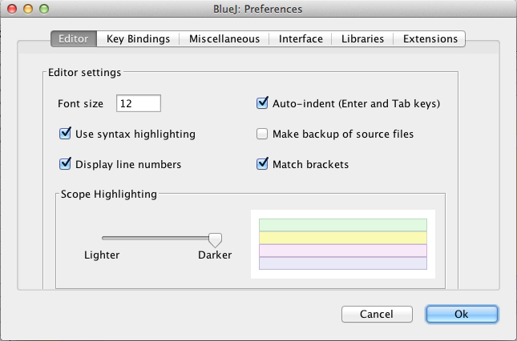
Using BlueJ Debugger(2)
We will now eliminate the bug triggered by invoking checkEndDayBoundary method.
We shall do this by inserting a fix in the method makeAppointment to ensure that if an attempt is made to access the array appointments with an invalid upper index:
- The program will not crash
- The program will not attempt to access an array with an invalid (out-of-bounds) index
- The method makeAppointment will return false immediately any such invalid action is attempted.
Here is the refactored makeAppointment method:
public boolean makeAppointment(int time, Appointment appointment)
{
if(validTime(time)) {
int startTime = time - START_OF_DAY;
if(appointments[startTime] == null) {
int duration = appointment.getDuration();
// Fill in all the slots for the full duration
// of the appointment.
for(int i = 0; i < duration; i++) {
int index = startTime + i;
//check for out of bounds condition 20140301jf
if(index >= MAX_APPOINTMENTS_PER_DAY)
{
return false;
}
appointments[index] = appointment;
}
return true;
}
else {
return false;
}
}
else {
return false;
}
}As you can see, we have modified the for loop as shown in Figure 1 to ensure the appointments array is never accessed with an upper invalid index.
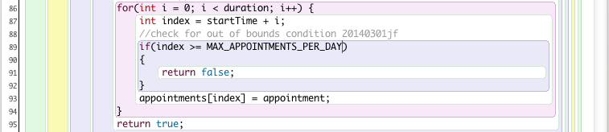
This describes what we have done and why:
- Declared a local variable index.
- index has been assigned startTime + i.
- Checked if index is equal to or greater than the termination value in the preceeding for statement in which case index is invalid.
- The termination value is contained in the variable duration.
- for(int i = 0; i < duration; i++)
- The termination value is contained in the variable duration.
- If index is greater than or equal to the termination value then attempting to access the appointments array with this index would trigger an out of bounds error.
- To avoid such an error occuring, therefore, if the index is invalid the method immediatly returns the boolean value false.
Here is a slightly different approach to refactoring where we have created a private method to check if the index under consideration is out of bounds. Which do you think is easier to understand?
/**
* Make an appointment.
* @param time The hour at which the appointment starts.
* @param appointment The appointment to be made.
* @return true if the appointment was successful,
* false otherwise.
*/
public boolean makeAppointment(int time,
Appointment appointment)
{
if(validTime(time)) {
int startTime = time - START_OF_DAY;
if(appointments[startTime] == null) {
int duration = appointment.getDuration();
// Fill in all the slots for the full duration
// of the appointment.
for(int i = 0; i < duration; i++) {
if (outOfBounds(startTime + i))
return false;
appointments[startTime + i] = appointment;
}
return true;
}
else {
return false;
}
}
else {
return false;
}
}
/*
* Checks if appointments array index is out of bounds - below lower bound or above upper bound
* @param index the index of the Appointment[] appointments array being checked
* @return returns true if the index is out of bounds otherwise returns false
*/
private boolean outOfBounds(int index)
{
return index >= MAX_APPOINTMENTS_PER_DAY || index < 0;
}Test this refactoring as follows:
- If the debugger is still running shut it down by pressing the Terminate button on the BlueJ Debugger window (Figure 2)
- Refactor the Day.makeAppointment method as described above.
- Recompile, ensuring no errors generated.
- Create a new DiaryTester on the object bench.
- Invoke checkEndDayBoundary on the DiaryTester object.
- The error previously encountered should no longer appear.
- See sample output in Figure 3. Note that output message:
- Unable to make appointment outside office hours
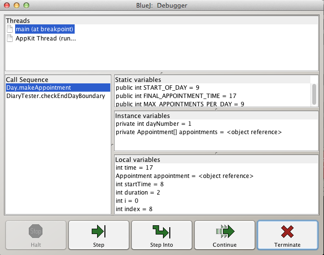
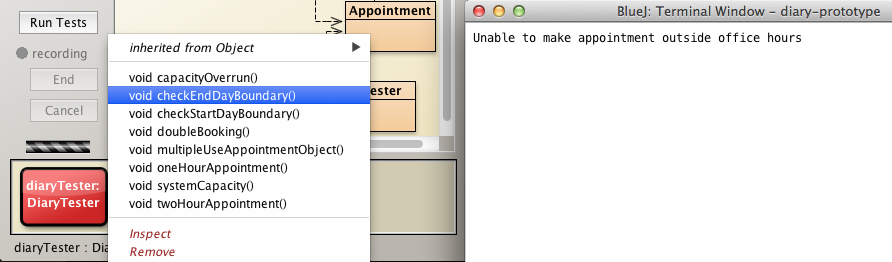
Automated regression test
The test methods that we have demonstrated can be automated using a testing system know as JUnit.
JUnit is a Java test framework. Variations exist also for other languages.
We will now implement JUnit for the diary-prototype project.
Open diary-prototype project
Create a JUnit test class for DiaryTester as follows:
- Select DiaryTester
- Right click
- Select and invoke Create Test Class
- Observe new class diagram DiaryTesterTest in the background of DiaryTester (Figure 1).
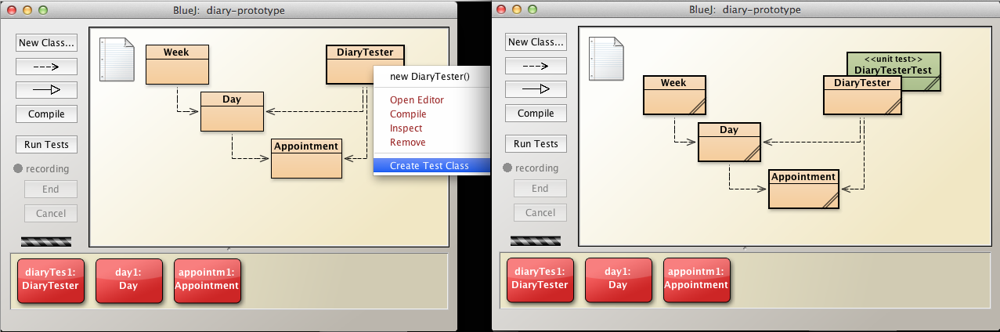
As a reminder, here are the signatures of the methods in DiaryTester.
- Positive testing
- public void oneHourAppointment()
- public void twoHourAppointment()
- public void multipleUseAppointmentObject()
- public void systemCapacity()
- Negative testing
- public void doubleBooking()
- public void checkStartDayBoundary()
- public void checkEndDayBoundary()
Before we implement the tests we will make changes to ensure the methods return boolean values.
Refactor the DiaryTester code as follows:
public class DiaryTester
{
//Positive tests
public boolean oneHourAppointment()
{
Day day = new Day(1);
boolean testResult = true;
Appointment appointm1 = new Appointment("Java lecture", 1);
Appointment appointm2 = new Appointment("Java lab", 1);
Appointment appointm3 = new Appointment("Database lecture", 1);
testResult = day.makeAppointment(10, appointm1) &&
day.makeAppointment(11, appointm2) &&
day.makeAppointment(12, appointm3);
return testResult;
}
public boolean twoHourAppointment()
{
Day day = new Day(1);
boolean testResult = true;
Appointment appointm1 = new Appointment("Course board meet", 2);
testResult = day.makeAppointment(16, appointm1);//add at 4 p.m.
return testResult;
}
// Purpose is to demonstrate same appointment object
// may be used more than once.
public boolean multipleUseAppointmentObject()
{
Day day = new Day(1);
boolean testResult = true;
Appointment appointm1 = new Appointment("Course board meet", 1);
testResult = day.makeAppointment(16, appointm1) && //add at 4 p.m.
day.makeAppointment(17, appointm1); //add same appointment at 5 p.m.
return testResult;
}
public boolean systemCapacity()
{
Day day = new Day(1);
boolean testResult = true;
Appointment appointm1 = new Appointment("Course board meet", 1);
//add the same appointment throughout the entire day
testResult = day.makeAppointment(9, appointm1) &&
day.makeAppointment(10, appointm1) &&
day.makeAppointment(11, appointm1) &&
day.makeAppointment(12, appointm1) &&
day.makeAppointment(13, appointm1) &&
day.makeAppointment(14, appointm1) &&
day.makeAppointment(15, appointm1) &&
day.makeAppointment(16, appointm1) &&
day.makeAppointment(17, appointm1);
return testResult;
}
//Negative Tests
public boolean doubleBooking()
{
Day day = new Day(1);
boolean testResult = true;
Appointment appointm1 = new Appointment("Java lecture", 1);
Appointment appointm2 = new Appointment("Java lab", 1);
testResult = day.makeAppointment(10, appointm1) &&
day.makeAppointment(10, appointm1);
return testResult;
}
public boolean checkStartDayBoundary()
{
Day day = new Day(1);
//check start day boundary by attempting 2 hour appointment beginning at 8am
Appointment appointm1 = new Appointment("Course board meet", 2);
boolean status = day.makeAppointment(8, appointm1);
if(status == false)
{
System.out.println("Unable to make appointment outsides office hours");
return false;
}
return true;
}
public boolean checkEndDayBoundary()
{
Day day = new Day(1);
//check end day boundary by attempting 2 hour appointment beginning at 5pm
Appointment appointm2 = new Appointment("Course board meet", 2);
boolean status = day.makeAppointment(17, appointm2);
if(status == false)
{
System.out.println("Unable to make appointment outsides office hours");
return false;
}
return true;
}
public boolean boundaryOverrun()
{
Day day = new Day(1);
boolean testResult = true;
Appointment appointm1 = new Appointment("Java lecture", 2);
Appointment appointm2 = new Appointment("Java lab", 2);
testResult = day.makeAppointment(8, appointm1) &&
day.makeAppointment(17, appointm2);
return testResult;
}
}The above refactored code comprises the following changes in each method:
- A local variable boolean testResults is declared.
- The returned boolean values from each invocation of makeAppointment are combined using logical AND (&&).
- This provides a single boolean value to be returned.
- The variable testResult is returned to the invoking method.
BlueJ Recorder
Let's begin by creating a DiaryTesterTest method batchTest.
- Right click on DiaryTesterTest and invoke CreateTestMethod (Figure 2).

- In the New Test Method window that appears type the name of the new method batchTest in the text box (Figure 3). 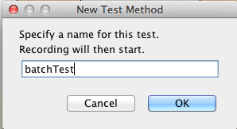
- The red recording button then appears in the left column (Figure 4). 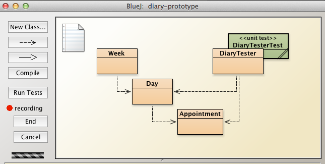
- Right click on DiaryTester and instantiate new DiaryTester() object named diaryTester (Figure 5). 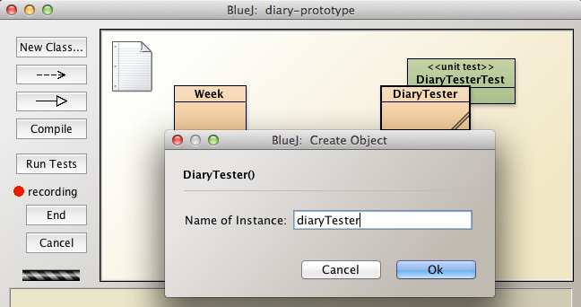
- Invoke the method oneHourAppointment on diaryTester (Figure 6). 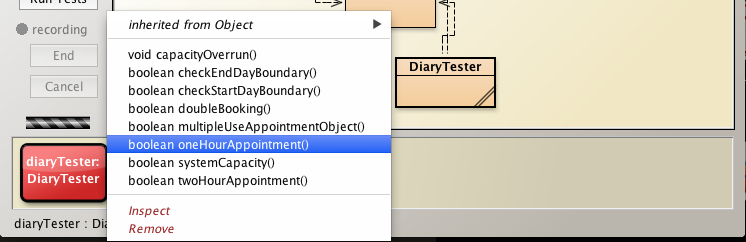
A window BlueJ: Method Result then opens:
- type true in the edit box following the button equal to (Figure 7)
- true because this is a positive test and we expect, for success, that invoking oneHourAppointment returns true. 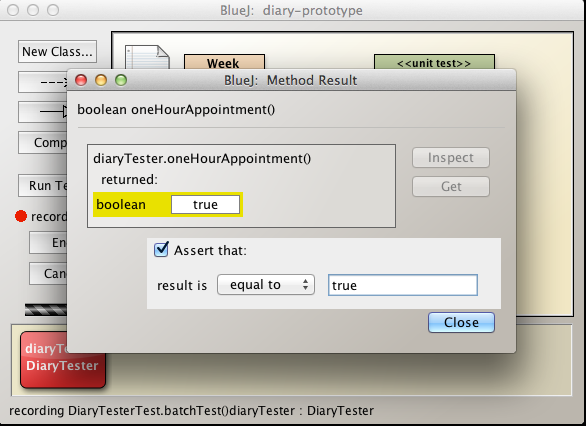
- Press Close and then press the End button to terminate recording.
- Invoke the method testAll on the DiaryTesterTest class (Figure 8). 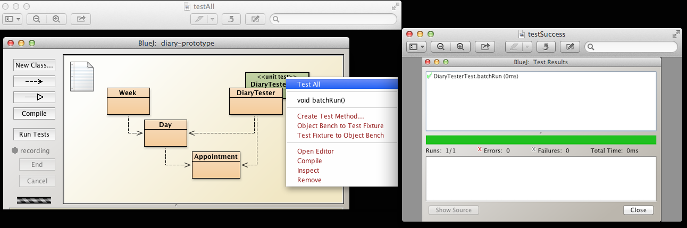
You can see from Figure 7 that the test succeeded. This is indicated by the horizontal green bar in the BlueJ Test Results window.
Let's now explore the source code for DiaryTesterTest.
Open the file in the BlueJ editor.
With the exception of the final method, batchTest, all the class was auto-generated when we invoked new DiaryTester method on DiaryTester (Figure 9).
The method batchTest (Figure 10) was created while the recording facility was active.

Refactor Test method
Summary of the steps required to create and run a test method on the DiaryTesterTest JUnit class:
- Generate a DiaryTesterTest class
- Right click on DiaryTester selected Create Test Class from drop-down menu.
- This creates a DiaryTesterTest class represented by a green class diagram partially concealed behind the DiaryTester class diagram.
- Right click on DiaryTesterTest and select Create New Test Method to which we assign the name batchTest.
- This starts the recorder, represented by a red dot in the left column of the BlueJ diary-prototype window.
- While the recorder is running
- Right click on DiaryTester and create a DiaryTester object, diaryTester on the object bench.
- Invoke oneHourAppointment on diaryTester object.
- End the recording.
- Right click on DiaryTesterTest and invoke TestAll().
- Observe the results in the BlueJ Test Results window.
We could continue to add test methods using the recorder.
But, alternatively, we now choose to manually refactor DiaryTesterTest:
- Delete batchTest and replace with:
- positiveTests and
- negativeTests as follows:
@Test
public void positiveTests()
{
DiaryTester diaryTester = new DiaryTester();
//positive tests
assertEquals(true, diaryTester.oneHourAppointment());
assertEquals(true, diaryTester.twoHourAppointment());
assertEquals(true, diaryTester.multipleUseAppointmentObject());
assertEquals(true, diaryTester.systemCapacity());
} @Test
public void negativeTests()
{
DiaryTester diaryTester = new DiaryTester();
//negative tests
assertEquals(false, diaryTester.doubleBooking());
assertEquals(false, diaryTester.checkStartDayBoundary());
assertEquals(false, diaryTester.checkEndDayBoundary());
}Observe that in negative tests the first argument to assertEquals is false.
- Compare with the assertsEquals arguments in the positive tests.
Compile this code and invoke
- DiaryTesterTest negativeTests
- DiaryTesterTest positiveTests
You may run all tests, positive and negative, with a single invocation of DiaryTesterTest TestAll the result of which is depicted in Figure 1.
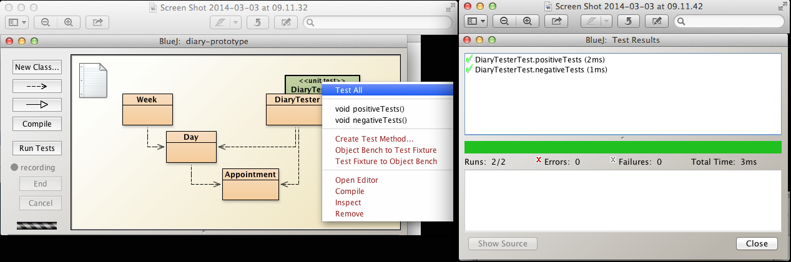
Fixtures
A fixture comprises objects used repeatedly in a test. The following examples should help to clarify.
We shall make use of BlueJ to add a fixture to the DiaryTesterTest class.
- Open the source code for DiaryTesterTest in the editor and note that we use the same local variable in both methods, namely, DiaryTester diaryTester (Figure 1).
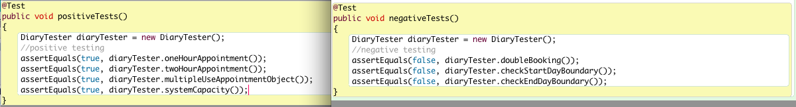
- Delete the DiaryTesterTest by right clicking and selecting Remove (Figure 2).
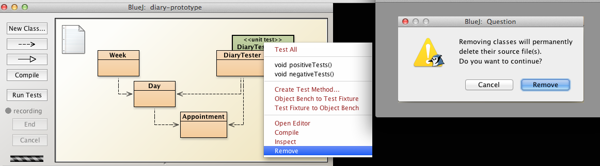
Recreate DiaryTesterTest by invoking Create Test Class on DiaryTester.
Create a DiaryTester object named diaryTester on the object bench.
Right click on DiaryTesterTest and select Object Bench to Test Fixture (Figure 3).
- Observe that the DiaryTester object disappears from the object bench.
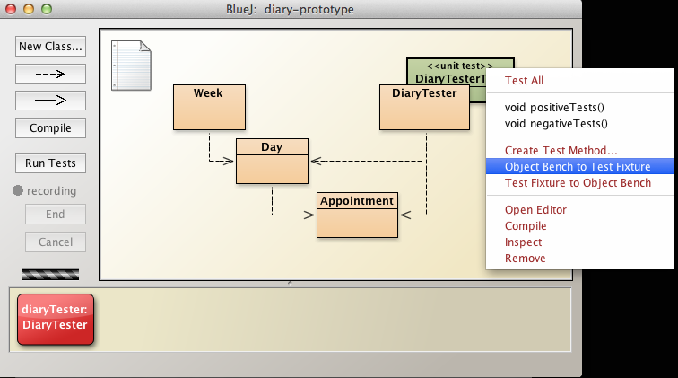
- Right click on DiaryTesterTest and invoke Create Test Method called positiveTests.
- The recorder is now active and
- The DiaryTester diaryTester object reappears on the object bench.
- Right click on the diaryTester object on the object bench and invoke oneHourAppointment
- Ensure Assert that result is set equal to true (Figure 4).
- Caution: ensure that the BlueJ: Test Results window (as shown on the previous step Figure 1) is closed. Othewise invoking oneHourAppointment may not function correctly: for example the window shown in Figure 7, step 12, may not open.
- End recording.
- Repeat steps similar to immediately above to create a negative test:
- Ensure that the diaryTester is displayed on the object bench.
- Right click on DiaryTesterTest and invoke Create Test Method called negativeTests.
- Invoke doubleBooking on the DiaryTester object.
- Ensure Assert that result is set to false (Figure 5).
- Close and End recording.
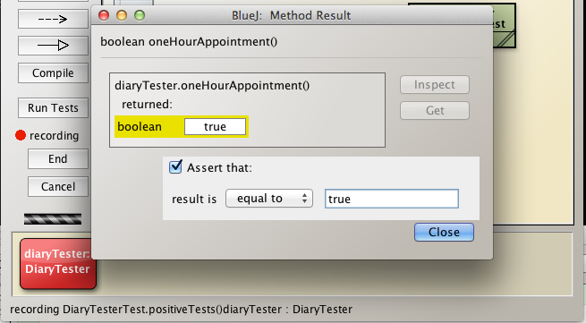
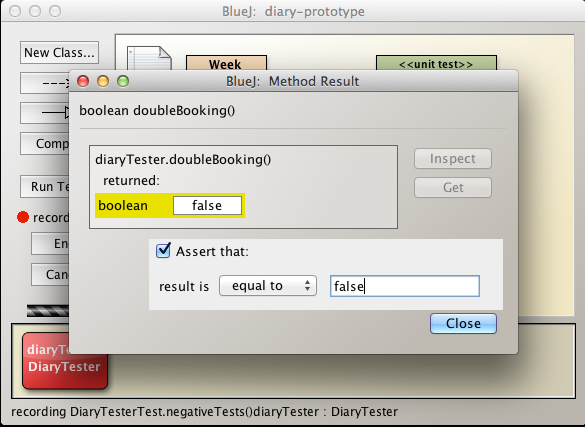
In the BlueJ editor, inspect the DiaryTesterTest source code, copied below.
Notice that DiaryTester diaryTester which had been a local variable previous to introducing fixtures, has now been changed to an instance variable.
public class DiaryTesterTest
{
private DiaryTester diaryTester; //This is the fixture
/**
* Default constructor for test class DiaryTesterTest
*/
public DiaryTesterTest()
{
}
/**
* Sets up the test fixture.
*
* Called before every test case method.
*/
@Before
public void setUp()
{
diaryTester = new DiaryTester();
}
/**
* Tears down the test fixture.
*
* Called after every test case method.
*/
@After
public void tearDown()
{
}
@Test
public void positiveTests()
{
assertEquals(true, diaryTester.oneHourAppointment());
}
@Test
public void negativeTests()
{
assertEquals(false, diaryTester.doubleBooking());
}
}Using the above model, you may find it more efficient to make any further additions manually rather than using the BlueJ recording facility.
Exercises
Exercise 1
DiaryTester: Write the negative regression test capacityOverrun:
- Write this method and incorporate method into DiaryTester
- The method should attempt to add a single appointment that exceeds the length of a working day and returns false
- Run all regression tests to verify no errors introduced.
Exercise 2
This exercise comprises addition to and unit testing of BIABank class, developed in an earlier lab.
Exercise 2: Preparation
- Download the archive biabank.zip available here and expand it into your working folder workspaceBlueJ/labs/session06.
- In Windows Explorer, Finder or other file manager, navigate to workspaceBlueJ/labs/session06.
- biabank.zip should be expanded into this folder as a BlueJ project, BIABank (see Figure 1).
- Launch the project by double clicking on package.bluej within BIABank folder
- Open BIABank source file and observe that it closely matches BIABank_v5, the final iteration, developed in a previous session.
- Some refactoring has been applied to simplify testing.
- the private access modifiers have been mostly removed.
- this allows package-wide access to the affected variables (see here).
- Some refactoring has been applied to simplify testing.
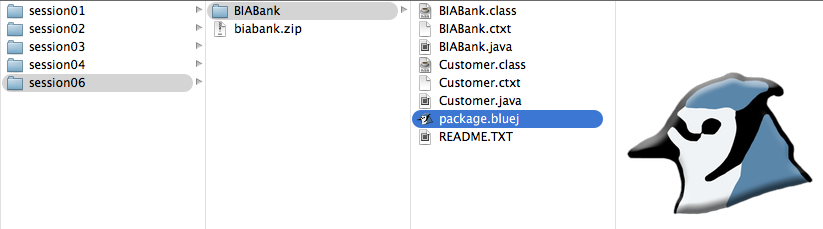
Exercise 2: Task 1
Observe the following field in BIABank:
- ArrayList
customers
Create a method in BIABank with this signature:
- public Customer getCustomer(String name)
The method searches through the list of customers for a customer matching the actual parameter name.
- If found, the corresponding Customer object is returned.
- Else return a new Customer object with parameters:
- "No such customer exists"
- 0
- 0
- study the signature of the Customer constructor if in doubt about the meaning of the above three parameters.
Exercise 2: Task 2
- Create a BIABank bank object on the object bench and add three customers:
bank.newCustomer("Enda Haughey", 999);
bank.newCustomer("Charles Kenny", 888);
bank.newCustomer("David Spring", 777);Create a BIABank test class and create a fixture by invoking the following method on the test class:
- Object Bench to Test Fixture
- Inspect the test class code to verify the fixture has been written into to class.
Exercise 2: Task 3
Write a positive test named numberCustomers:
- test that the number of customers is 3.
Exercise 2: Task 4
Write a positive test named customerName:
- Select one of the customer names
- Invoke the newly added method getCustomer to obtain the corresponding Customer object
- Get the customer name from the customer object
- Test that it matches the selected name
Exercise 2: Task 5
Write a positive test named customerNames:
- Select one of the customer names
- Invoke the newly added method getCustomer to obtain the corresponding Customer object
- Get the customer name from the customer object
- Check that it matches the selected name, storing the result in a boolean variable.
- Repeat for the remaining 2 customers.
- Test that all three boolean variable are true.
Exercise 2: Task 6
Write a positive test named customerBalance:
- Select one of the three customers' names
- Retrieve the Customer object for this customer
- Obtain the balance for the customer from the Customer object
- Test the balance matches the balance entered above in the fixture for the customer in question.
Exercise 2: Task 7
Write a positive test named customerBalances:
- Using a simiar approach to that used in customerBalance, obtain all the balances.
- Test the sum of the balances equals 999 + 888 + 777.
Exercise 2: Task 8
Write a negative test in BIABankTest named notNumberCustomers.
- test that the number of customers is not, for example, 2.
Exercise 3: Task 9
Write a negative test named notCustomerBalance:
- Select one of the three customers' names
- Retrieve the Customer object for this customer
- Obtain the balance for that customer from the Customer object
- Test the balance does not match a balance that you know to be incorrect.
Exercise 2: Task 10
Write a negative test named notCustomerBalances:
- Using a simiar approach to that used in notCustomerBalance, obtain all the balances.
- Test the sum of the balances does not equal a balance you know to be incorrect, for example 20000.
Exercise 3
This is a simple exercise (more of a mini-lab really and to which a solution will not be provided) to obtain further experience in the use of the BlueJ debugger:
- Compile BIABankTest
- Place a break point on the first line of the method public void customerNames()
- Invoke TestAll on the BIABankTest class
- See Figure 2
- Step through the method and study the instance and local variables at each step(See Figure 3).
- Satisfy yourself with each value in turn as the program moves from one line to the next
- At the end of the method, run program to completion (press Continue).
- The tests should succeed as shown in Figure 4.
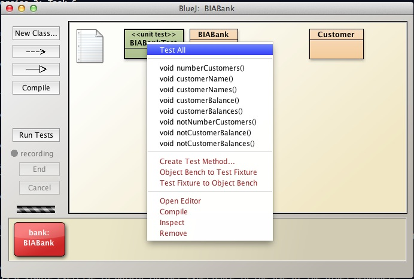
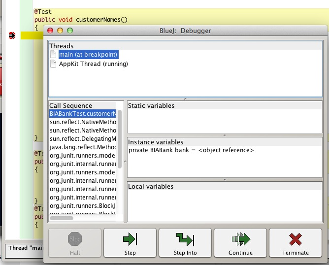
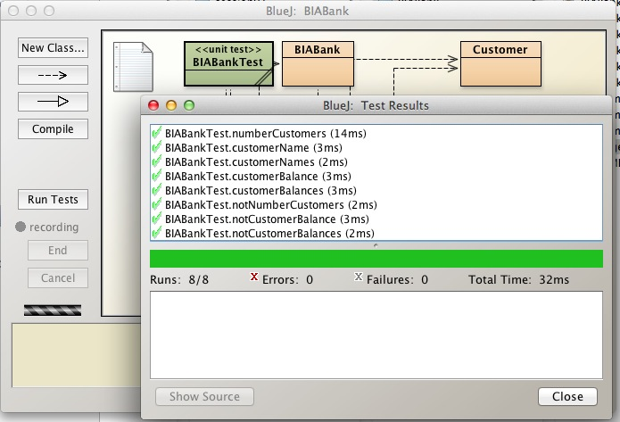